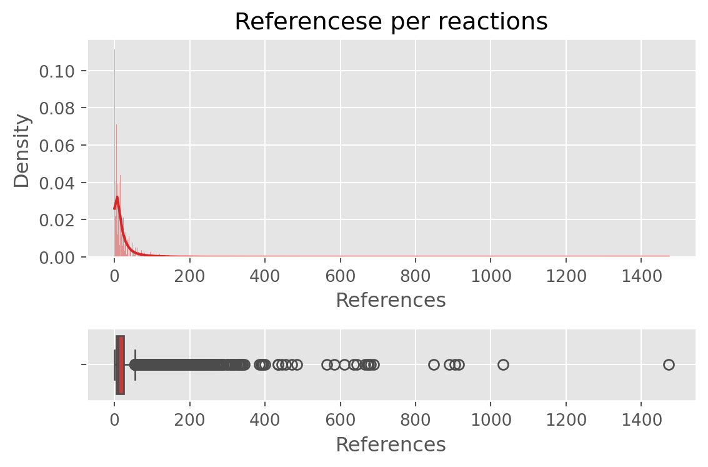
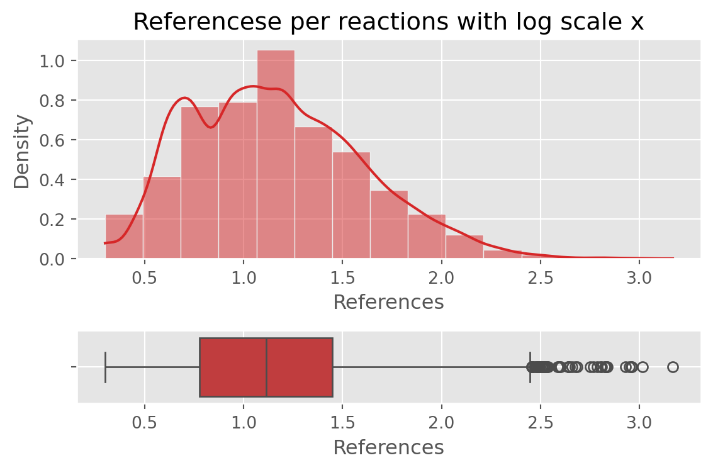
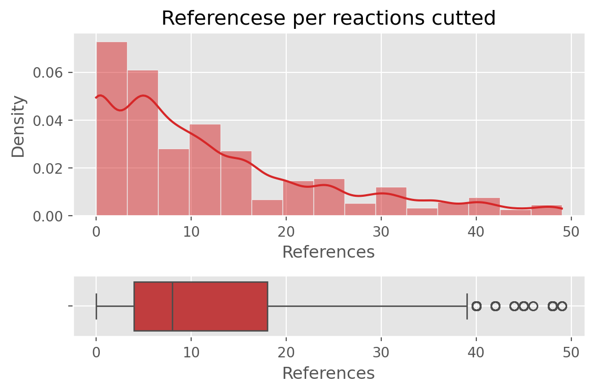

Code
# Read the big dataset
df = pd.read_parquet("./reactions.parquet")
df.nunique()file_id 2769
reaction_id 15357
original_notes 14802
notes 14799
only_references 10458
snippet 23855
dtype: int64While pathways (file_id) are all unique, the reactions inside them are not, so if I group for reaction_id I get less reactions than the total length of the dataframe.
# Read the big dataset
df = pd.read_parquet("./reactions.parquet")
df.nunique()file_id 2769
reaction_id 15357
original_notes 14802
notes 14799
only_references 10458
snippet 23855
dtype: int64print(f"\nNumber of rows in the original data:{len(df)}")
df = df.drop_duplicates().reset_index(drop=True)
print(f"\nNumber of rows after dropping duplicates:{len(df)}")
Number of rows in the original data:70904
Number of rows after dropping duplicates:70904Drop the column file_id in order to see the duplicates.
# Sort the data and display the first rows
df2 = df.drop(["file_id"], axis = 1)
first_len = len(df2)
print(f"\nNumber of rows without file_id data:{len(df2)}")
df2 = df2.drop_duplicates().reset_index(drop=True)
print(f"Number of rows after dropping duplicates:{len(df2)}")
print(f"So there are {first_len - len(df2)} rows where all the columns are the same.")
Number of rows without file_id data:70904
Number of rows after dropping duplicates:23855
So there are 47049 rows where all the columns are the same.Looking at the sorted dataframe it’s possible to see that the only thing that change is the meta-id of the snippet column.
print("First rows of sorted dataset by reaction_id:")
df2.sort_values(by='reaction_id').head(10)First rows of sorted dataset by reaction_id:| reaction_id | original_notes | notes | only_references | snippet | |
|---|---|---|---|---|---|
| 5380 | reaction_1006143 | Membrane cofactor protein (MCP; CD46) is a wid... | Membrane cofactor protein (MCP; CD46) is a wid... | None | <reaction compartment="compartment_876" fast="... |
| 5362 | reaction_1006169 | Factor H (CFH) preferentially binds to host ce... | Factor H (CFH) preferentially binds to host ce... | (Kazatchkine et al. 1979, Meri and Pangburn 1990) | <reaction compartment="compartment_876" fast="... |
| 19446 | reaction_1006169 | Factor H (CFH) preferentially binds to host ce... | Factor H (CFH) preferentially binds to host ce... | (Kazatchkine et al. 1979, Meri and Pangburn 1990) | <reaction compartment="compartment_876" fast="... |
| 9121 | reaction_1008200 | The human beta-globin locus control region (LC... | The human beta-globin locus control region (LC... | None | <reaction compartment="compartment_7660" fast=... |
| 14415 | reaction_1008200 | The human beta-globin locus control region (LC... | The human beta-globin locus control region (LC... | None | <reaction compartment="compartment_7660" fast=... |
| 9095 | reaction_1008220 | The human beta-globin locus consists of five g... | The human beta-globin locus consists of five g... | None | <reaction compartment="compartment_70101" fast... |
| 9105 | reaction_1008240 | NF-E2 is a heterodimer consisting of a hematop... | NF-E2 is a heterodimer consisting of a hematop... | (Motohashi et al. 1997); (Shavit et al. 1998);... | <reaction compartment="compartment_7660" fast=... |
| 9086 | reaction_1008248 | GTP-AMP phosphotransferase, also called Adenyl... | GTP-AMP phosphotransferase, also called Adenyl... | (Choe et al. 2005) | <reaction compartment="compartment_5460" fast=... |
| 9079 | reaction_1011576 | The four human EH domain-containing proteins (... | The four human EH domain-containing proteins (... | (Naslavsky and Caplan 2005); (Salcini et al. 1... | <reaction compartment="compartment_74700" fast... |
| 9084 | reaction_1011598 | Members of the Dedicator of cytokinesis (DOCK)... | Members of the Dedicator of cytokinesis (DOCK)... | (Cote and Vuori 2002); (Cote and Vuori 2007); ... | <reaction compartment="compartment_70101" fast... |
#Total number of reactions: 15357
# Looking at the first 4 rows
print(f"Original notes at index 0:\n{df2.sort_values(by='reaction_id')['original_notes'].iloc[0]}")
print(f"Original notes at index 1:\n{df2.sort_values(by='reaction_id')['original_notes'].iloc[1]}")
print(f"Original notes at index 2:\n{df2.sort_values(by='reaction_id')['original_notes'].iloc[2]}")
print("\n")
print(f"Snippet at index 0:\n{df2.sort_values(by='reaction_id')['snippet'].iloc[0]}")
print(f"Snippet at index 1:\n{df2.sort_values(by='reaction_id')['snippet'].iloc[1]}")
print(f"Snippet at index 2:\n{df2.sort_values(by='reaction_id')['snippet'].iloc[2]}")Original notes at index 0:
Membrane cofactor protein (MCP; CD46) is a widely distributed C3b/C4b-binding cell surface glycoprotein which is a cofactor for Complement factor I.
Original notes at index 1:
Factor H (CFH) preferentially binds to host cells and surfaces that have negatively charged cell surface polyanions such as heparin and sialic acid commonly found on host cells (Kazatchkine et al. 1979, Meri and Pangburn 1990). This mediates protection of plasma-exposed host structures.
Original notes at index 2:
Factor H (CFH) preferentially binds to host cells and surfaces that have negatively charged cell surface polyanions such as heparin and sialic acid commonly found on host cells (Kazatchkine et al. 1979, Meri and Pangburn 1990). This mediates protection of plasma-exposed host structures.
Snippet at index 0:
<reaction compartment="compartment_876" fast="false" id="reaction_1006143" name="CD46 binds C3b" reversible="false">
<listOfReactants>
<speciesReference constant="true" id="speciesreference_1006143_input_977362" sboTerm="SBO:0000010" species="species_977362" stoichiometry="1" />
<speciesReference constant="true" id="speciesreference_1006143_input_981542" sboTerm="SBO:0000010" species="species_981542" stoichiometry="1" />
</listOfReactants>
<listOfProducts>
<speciesReference constant="true" id="speciesreference_1006143_output_981623" sboTerm="SBO:0000011" species="species_981623" stoichiometry="1" />
</listOfProducts>
</reaction>
Snippet at index 1:
<reaction compartment="compartment_876" fast="false" id="reaction_1006169" name="Factor H binds host cell surface markers" reversible="false">
<listOfReactants>
<speciesReference constant="true" id="speciesreference_1006169_input_976788" sboTerm="SBO:0000010" species="species_976788" stoichiometry="1" />
<speciesReference constant="true" id="speciesreference_1006169_input_1006146" sboTerm="SBO:0000010" species="species_1006146" stoichiometry="1" />
</listOfReactants>
<listOfProducts>
<speciesReference constant="true" id="speciesreference_1006169_output_1006173" sboTerm="SBO:0000011" species="species_1006173" stoichiometry="1" />
</listOfProducts>
</reaction>
Snippet at index 2:
<reaction compartment="compartment_876" fast="false" id="reaction_1006169" name="Factor H binds host cell surface markers" reversible="false">
<listOfReactants>
<speciesReference constant="true" id="speciesreference_1006169_input_1006146" sboTerm="SBO:0000010" species="species_1006146" stoichiometry="1" />
<speciesReference constant="true" id="speciesreference_1006169_input_976788" sboTerm="SBO:0000010" species="species_976788" stoichiometry="1" />
</listOfReactants>
<listOfProducts>
<speciesReference constant="true" id="speciesreference_1006169_output_1006173" sboTerm="SBO:0000011" species="species_1006173" stoichiometry="1" />
</listOfProducts>
</reaction>
Each reaction_id is associated with only one notes while the same note can be associated to different reactions. Grouping by reaction_id and counting the number of unique notes for it:
# Group by reaction_id and count the number of unique notes for each
different_notes = df.groupby('reaction_id')['notes'].nunique()
# Filter to keep only reaction_ids with more than 1 unique note
reaction_ids_with_different_notes = different_notes[different_notes > 1]
print(f"Number of unique reaction_ids: {len(different_notes)}")
print(f"Number of reaction with more than one note associated: {len(reaction_ids_with_different_notes)}")Number of unique reaction_ids: 15357
Number of reaction with more than one note associated: 0Grouping by note and counting the number of unique reaction_id for it:
# Group by 'notes' and count the number of unique reaction_id values
multiple_reactions_per_note = df.groupby('notes')['reaction_id'].nunique()
# Filter to keep only notes linked to more than one reaction_id
notes_with_multiple_reactions = multiple_reactions_per_note[multiple_reactions_per_note > 1]
# Display the notes (and how many reaction_ids they are linked to)
print(f"Number of unique notes: {len(multiple_reactions_per_note)}")
print(f"Number of notes with more than one reaction associated: {len(notes_with_multiple_reactions)}")Number of unique notes: 14799
Number of notes with more than one reaction associated: 386# Filter the original DataFrame to only include those notes
conflicting_notes_rows = df[df['notes'].isin(notes_with_multiple_reactions.index)]
print(f"Number of rows of the dataset composed by duplicated notes: {len(conflicting_notes_rows)}")
conflicting_notes_rows[["reaction_id","notes"]].sort_values(by='notes').head(15)Number of rows of the dataset composed by duplicated notes: 4769| reaction_id | notes | |
|---|---|---|
| 4126 | reaction_1971491 | A glucuronate (GlcA) moiety is added to the ch... |
| 68305 | reaction_9632034 | A glucuronate (GlcA) moiety is added to the ch... |
| 30535 | reaction_9632034 | A glucuronate (GlcA) moiety is added to the ch... |
| 65999 | reaction_1971491 | A glucuronate (GlcA) moiety is added to the ch... |
| 18131 | reaction_9632034 | A glucuronate (GlcA) moiety is added to the ch... |
| 18117 | reaction_1971491 | A glucuronate (GlcA) moiety is added to the ch... |
| 4124 | reaction_9632034 | A glucuronate (GlcA) moiety is added to the ch... |
| 4586 | reaction_1971491 | A glucuronate (GlcA) moiety is added to the ch... |
| 30349 | reaction_1971491 | A glucuronate (GlcA) moiety is added to the ch... |
| 4589 | reaction_9632034 | A glucuronate (GlcA) moiety is added to the ch... |
| 6865 | reaction_198958 | A hallmark of human NK cells is the expression... |
| 6835 | reaction_199587 | A hallmark of human NK cells is the expression... |
| 20019 | reaction_199566 | A hallmark of human NK cells is the expression... |
| 6839 | reaction_199576 | A hallmark of human NK cells is the expression... |
| 20010 | reaction_199587 | A hallmark of human NK cells is the expression... |
print(f"Number of unique values of the dataset composed by duplicated notes:\n{conflicting_notes_rows.nunique()}")Number of unique values of the dataset composed by duplicated notes:
file_id 667
reaction_id 944
original_notes 389
notes 386
only_references 259
snippet 1509
dtype: int64df['parsed_references'] = df['only_references'].apply(extract_references)
# How many references per reaction
references_per_reaction = df.groupby('reaction_id')['parsed_references'].apply(
lambda lists: sum(len(ref) for ref in lists)
)
# How many unique references per file
unique_refs_per_reactions = df.groupby('reaction_id')['parsed_references'].apply(
lambda ref_lists: len(set(ref for refs in ref_lists for ref in refs))
)
# Results
print(f"\nTotal number of references per reaction:\n{references_per_reaction.head(10)}")
print(f"\nUnique references per reaction:\n{unique_refs_per_reactions.head(10)}")
plot_data(data = references_per_reaction,
outputname = "fig10.png",
title = "Referencese per reactions",
xlabel = "References",
color = ggplot_colors[3],
boxplot = True
)
plot_data(data = references_per_reaction,
outputname = "fig11.png",
title = "Referencese per reactions with log scale x",
xlabel = "References",
color = ggplot_colors[3],
boxplot = True,
logscale_x = True,
n_bins = 15
)
plot_data(data = references_per_reaction,
outputname = "fig12.png",
title = "Referencese per reactions cutted",
xlabel = "References",
color = ggplot_colors[3],
boxplot = True,
cut_percentile=(0,90),
n_bins = 15
)
print_stats(references_per_reaction)
Total number of references per reaction:
reaction_id
reaction_1006143 0
reaction_1006169 8
reaction_1008200 0
reaction_1008220 0
reaction_1008240 12
reaction_1008248 2
reaction_1011576 12
reaction_1011598 14
reaction_1011600 4
reaction_1013012 0
Name: parsed_references, dtype: int64
Unique references per reaction:
reaction_id
reaction_1006143 0
reaction_1006169 2
reaction_1008200 0
reaction_1008220 0
reaction_1008240 5
reaction_1008248 1
reaction_1011576 4
reaction_1011598 5
reaction_1011600 2
reaction_1013012 0
Name: parsed_references, dtype: int64


Descriptive Statistics:
Mean: 21.50
Median: 10.00
Standard Deviation: 42.55
Minimum: 0
Maximum: 1472
25th percentile (Q1): 4.00
75th percentile (Q3): 24.00
IQR (Interquartile Range): 20.00